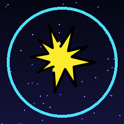
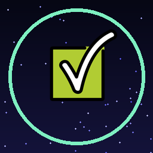
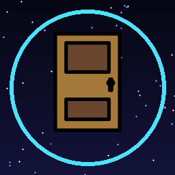
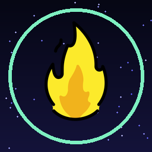
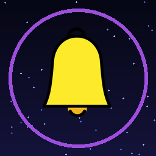
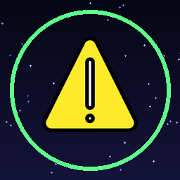

A suite de engenharia desportiva para gaming competitivo: Otimização de baixa latência DPC (0.05ms), novo Instalador de Softwares com 10 categorias e 94 ferramentas, Soundboard com capas e fotos originais do Voicemod e auto-update transparente.
⚡ Interação Física 3D: Move o rato para rodar o núcleo. Clica no reator para libertar uma onda de choque de energia!
Vê a diferença prática entre o Windows padrão e a estabilidade proporcionada pelo Pulse Gaming Optimizer.
Sub-Tick Aligned • NVIDIA Reflex Boost • Latência DPC 0.05ms • Zero Stuttering
Clica em qualquer meme abaixo para ouvir o som reproduzido e ver o visualizador de frequências de áudio em tempo real!






Inspirado na grelha WinUtil de Chris Titus: 10 categorias organizadas com 94 ferramentas essenciais para gaming, programação, multimédia e otimização.
Sem truques de marketing e sem placebo: cada módulo atua diretamente nas camadas de driver, temporização do kernel e prioridades de hardware.
Ativa o Modo Competitivo com 1 clique. Otimiza timers de sistema para 0.500ms, purga memória em standby e fixa fios de processamento.
Importação completa de sons da biblioteca do Voicemod com fotografias e capas originais em alta definição. Sem ficheiros corrompidos.
Monitorização visual com anéis circulares vetoriais para CPU, GPU, RAM e Disco. Desenvolvido para consumir menos de 0.1% de CPU.
Configurações das lendas do CS2 (s1mple, NiKo, donk, m0NESY, ZywOo) aplicadas instantaneamente através de códigos oficiais de partilha.
Totalmente compatível com VAC, FaceIt AC, Riot Vanguard e EasyAntiCheat. Não injeta DLLs na memória dos jogos.
Atualizações suaves sem intervenção manual. Ao atualizar, a aplicação fecha a versão antiga, substitui os binários e reinicia-se sozinha.
Absolutamente não! O Pulse Gaming Optimizer é 100% VAC-Safe e compatível com anti-cheats como FaceIt, Riot Vanguard e EasyAntiCheat. Não injeta qualquer DLL, não toca na memória dos jogos e altera apenas configurações oficiais do Windows e ficheiros CFG nativos.
O Pulse Optimizer possui um motor avançado que comunica com a biblioteca do teu Voicemod. Ele extrai os ficheiros de áudio, desencripta-os automaticamente e copia as fotografias e capas originais de cada meme, exibindo-os com alta definição no teu Soundboard.
Na barra lateral da aplicação encontras a secção Instalador de Apps. Ele verifica instantaneamente o registo do teu Windows para saber o que já tens instalado, permite selecionar dezenas de ferramentas ao mesmo tempo e instala-as ou desinstala-as silenciosamente em lote através do Microsoft Winget.
Sim, o Pulse Gaming Optimizer é um projeto de código aberto sob licença MIT. Podes inspecionar o código-fonte, contribuir e descarregar todas as versões gratuitamente através do repositório no GitHub.
Descarrega já o Pulse Gaming Optimizer e sente a diferença na primeira partida.